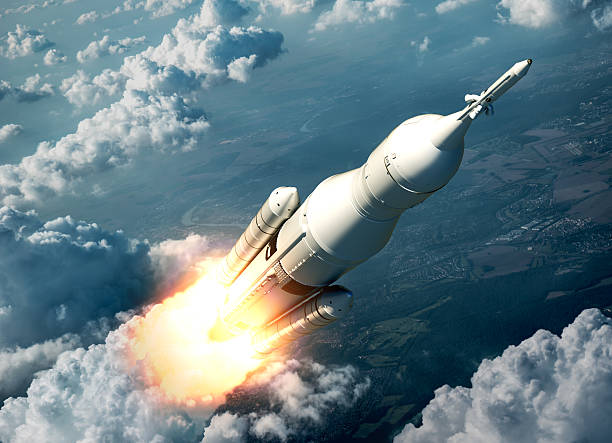
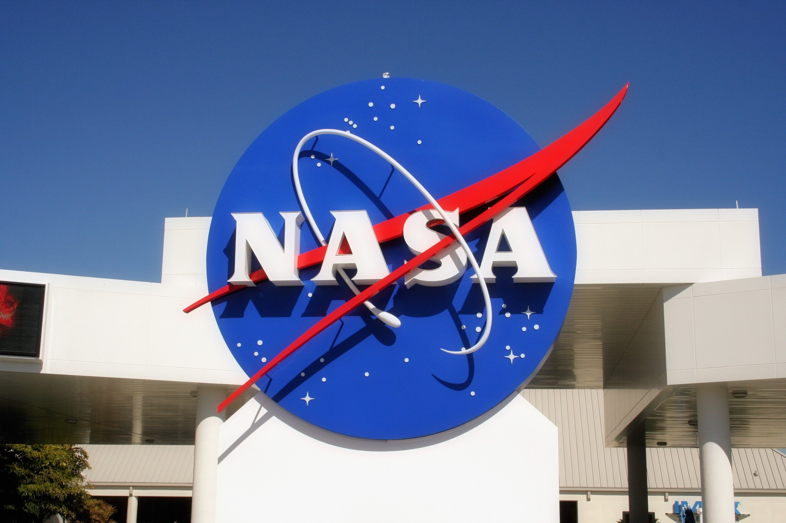

El futuro de la exploración espacial se dirige hacia misiones cada vez más ambiciosas y de mayor alcance. Se proyecta el establecimiento de bases permanentes en la Luna que servirán como plataformas de investigación, centros de entrenamiento y puntos de partida hacia Marte. Los viajes tripulados a Marte, aunque complejos, son un objetivo prioritario y podrían convertirse en realidad dentro de las próximas décadas. Paralelamente, el estudio de mundos oceánicos como Europa y Encélado promete avances clave en la búsqueda de vida fuera de la Tierra.
Las innovaciones tecnológicas jugarán un papel decisivo. El desarrollo de cohetes completamente reutilizables reducirá significativamente los costos de lanzamiento, mientras que la integración de sistemas de inteligencia artificial permitirá automatizar tareas complejas, realizar análisis más rápidos y operar sondas en entornos extremadamente hostiles. Estas mejoras harán que las misiones sean más rápidas, seguras y rentables.
Si estas iniciativas avanzan como se espera, podrían abrir nuevas oportunidades científicas, tecnológicas y económicas. La explotación responsable de recursos espaciales, el turismo espacial y la expansión del conocimiento humano más allá de la Tierra podrían marcar una nueva era para la humanidad, en la que el espacio se convierta en un ámbito clave para el progreso global.

